storage / intermediate
Lakebase：把 OLTP 重建为开放湖存储之上的弹性计算
Lakebase: Serverless Postgres over Open Lake Storage
2026 · PVLDB, Vol. 19, No. 12, pp. 4385-4398
Lakebase：面向开放湖存储的无服务器 Postgres
Jasraj Dange, Andrei Dragus, Ali Ghodsi, Haoyu Huang, Yihe Huang, Stas Kelvich, Heikki Linnakangas, Hans Norheim, Ippokratis Pandis, Nikita Shamgunov, Em Sharnoff, John Spray, Zhou Sun, Reynold Xin, Matei Zaharia
摘要
现代云应用与 AI 驱动的负载要求弹性计算、即时的环境隔离与开放的数据互操作性。然而，生产数据库大体上仍基于 1980 年代设计的单体架构，把存储与计算紧耦在一起，造成运维脆弱、成本低效与厂商锁定。本文提出 Lakebase——一种新的开放数据库架构，它把事务计算与存储解耦，同时把数据库数据以开放格式直接放入低成本的云对象存储。与 Amazon Aurora、Microsoft Socrates、Google AlloyDB 等第二代云数据库不同（它们在内部做了存储分离，但仍保留私有格式与单引擎访问），Lakebase 把存储暴露为一个开放、持久的湖层，同时在其上独立运行弹性、无服务器的 PostgreSQL 事务引擎。我们描述 Lakebase 背后的系统设计原则，包括开放格式的对象存储持久化、可缩容到零的计算弹性、基于写时复制语义的即时分支与克隆，以及共享湖存储之上的统一事务-分析访问——这些都已部署在 Databricks Lakebase 服务中。我们分析该架构如何降低运维复杂度、支持类 Git 的数据库工作流、改进故障恢复语义并缓解结构性的厂商锁定。我们进一步讨论生产部署特征、性能权衡、持久性保证以及对多云高可用的支持。我们用标准 OLTP 与分析基准评估 Lakebase，并给出关于分支与弹性的生产遥测数据。Lakebase 代表了数据库架构的第三代：为云对象存储、弹性计算与 AI 时代开发工作流原生重建的事务系统。
1 引言
事务数据库构成了现代软件系统的运行核心。每一个应用——无论是面向消费者的服务、企业系统、金融基础设施还是 AI 驱动的平台——最终都依赖事务数据库来持久化状态并强制保证正确性。尽管过去四十年应用架构发生了剧烈演进，生产数据库系统大体上仍根植于 1980 年代的设计假设。这些系统是为存储稀缺、网络缓慢且云弹性尚不存在的时代构建的。结果是，大多数已部署数据库的架构与当代基础设施和开发实践日益错位。
这种错位体现在三个持续存在的问题上。第一，把计算与存储紧耦在一个已供给的单元内，造成运维脆弱与经济效益低下。容量必须按峰值需求供给，导致正常运行时昂贵资源闲置。当负载超过已供给容量时性能会骤降。快照、回填或合规相关的清理查询等例行任务会与生产流量直接争抢资源，并可能威胁可用性。简言之，单体数据库仍是现代基础设施中最脆弱的组件之一。
第二，传统数据库与当代开发工作流并不契合。现代软件工程围绕快速迭代与隔离构建。版本控制系统允许开发者瞬时地分支整个代码库。然而，供给一个真实可用的数据库环境通常需要数分钟到数小时以及大量运维开销。随着开发速度加快，数据库越来越成为瓶颈而非助推器。
第三，现有架构施加了结构性的厂商锁定。存储格式与单一执行引擎紧耦，数据只能通过该引擎访问。迁移代价高且风险大，分析集成需要通过 ETL 管道复制数据，跨云可移植性也受限。一旦大规模部署，组织就会深度依赖厂商的私有存储层。
数据库系统的历史演进有助于解释这种局面如何形成。今天使用的大多数数据库系统，例如 MySQL [38]、PostgreSQL [4] 与 Oracle [3]，其设计继承自 System R [13]、Ingres [26] 等第一代数据库系统，把计算与存储紧绑在单台机器内。在云之前的时代这种设计是理性的：当时本地磁盘访问远远优于网络存储，纵向扩展是提升性能的主要途径。
随着云基础设施成熟，Amazon Aurora [46]、Socrates [8] 与 AlloyDB [1] 等第二代系统在计算与存储之间引入了物理分离，把持久化下沉到分布式后端层。这些系统改善了弹性与可用性，但分离仍限于厂商架构内部。存储格式依旧是私有的，数据仍然只能通过主数据库引擎访问。结果是一种过渡性架构：改善了性能特征，却没有从根本上解决可移植性、开放性与多引擎访问。
与此同时，新的负载正给事务系统带来前所未有的压力。AI 驱动的开发与自主智能体的兴起，引入了与数据库之间一种根本不同的交互模型。智能体会以机器的速度生成代码、执行迁移、验证假设并做实验。这类工作流要求能够按需创建隔离的、高保真的数据库环境，在不影响生产流量的前提下运行昂贵的探索性查询，并弹性伸缩计算——且往往是短生命周期任务。传统的常开、紧耦数据库实例难以适应这种短暂且突发性的负载。
在本文中，我们提出 Lakebase，一种第三代事务数据库架构。Lakebase 将计算与存储完全分离，并以开放格式把数据库数据直接持久化到云对象存储。事务引擎——无服务器 PostgreSQL——独立于存储层运行，并可根据负载需求弹性伸缩。由于存储被外置且开放，数据库可以通过写时复制技术进行分支与克隆，即使在大规模下也能近乎瞬时地创建隔离环境。运维任务可以在独立计算实例上运行而不干扰生产流量。此外，共享同一个由湖支撑的存储层，可以在无需昂贵数据复制的情况下实现统一的事务与分析处理。
Lakebase 把数据库重新定义为开放、持久存储之上的弹性事务计算。通过与现代云基础设施和 AI 原生工作流对齐，它解决了运维复杂度、开发速度与厂商锁定方面的长期难题。我们认为，开放、以湖为后端的事务系统是数据库架构自然演进的下一个代际。
本文的贡献如下。我们在第 3 节提出 Lakebase——一种具有完全存算分离的、以湖为后端的事务架构。Lakebase 构建在一个开放的、兼容 MVCC 的存储层之上，支持可扩展的写时复制分支（第 4 节），并配有弹性、无服务器的计算（第 5 节）。Lakebase 与 Lakehouse 原生集成，提供统一的数据方案（第 6 节）。最后，我们在第 7 节对 Lakebase 的分支、弹性、OLTP 性能与 Lakehouse 集成进行实证评估，并在第 8 节介绍相关工作。
2 智能体与数据库系统
在介绍 Lakebase 的设计与评估之前，我们先考察 AI 智能体正在如何重塑数据库负载。
在撰写本文时，Lakebase 每天创建并管理超过一千万个数据库，其中 AI 智能体创建的数据库数量约为人类用户的 4 倍。大语言模型（LLM）如今使得智能体框架能够以极少的人工介入生成代码、运行测试并迭代改进应用。第三代数据库的架构原语——弹性计算、存算分离、分支与开放格式——早于这一趋势出现，但智能体负载放大了它们的重要性，并从三个维度给早期 OLTP 架构施加压力，这三个维度直接影响数据库设计。
成本敏感性与应用数量的激增： 智能体式开发大幅降低了创建应用的成本，带来大量短生命周期、实验性的服务，它们大多处于空闲状态、常被丢弃且单体价值低。如图 1（取自 Databricks Lakebase 服务）所示，许多生产数据库实例的存活时间不足 10 秒。这与传统 OLTP 部署严重不匹配——后者假设实例长期存活且计算持续供给。智能体负载反而需要细粒度的弹性、近乎为零的空闲成本与自动化的生命周期管理，不仅要缩减计算，还要缩减运维复杂度，使单个应用的成本保持可忽略。
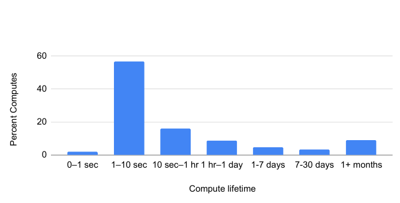
图 1：生产环境中观测到的计算实例存活时长。
演化式工作流： 在 Databricks，我们观察到定义良好的应用如今可以在几分钟内从零生成，过去需要数个季度协同人力才能完成的功能，借助智能体几天即可完成。通过压缩迭代周期，智能体工作流让开发者能够并行探索多个候选实现，而不是沿单一路径推进。
这一点从源代码延伸到数据库状态：每次迭代都会同时从前一版本分支出代码与数据库 [14]。图 2 展示了我们在 Databricks Lakebase 服务中观测到的数据库分支深度。许多生产数据库具有很深的分支层级，有些超过 500 个分支。因此数据库的检查点与分支成为一等原语，为数据库提供了"git checkout -b"式的体验。
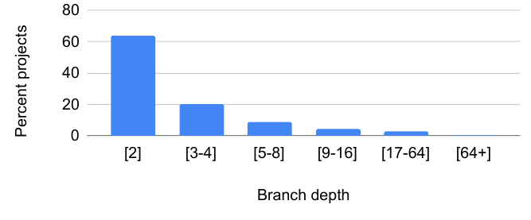
图 2：生产环境中观测到的分支深度。
开放生态： 智能体系统在公开训练语料中覆盖充分、被广泛使用的开放生态中表现最好，这强烈偏向开源接口与格式——尤其是 PostgreSQL 兼容性。
这一点超出了 SQL、延伸到存储层：开放格式让外部工具、智能体与分析引擎无需私有基础设施即可检查和加工数据，从而激励那些既保留标准 PostgreSQL 存储语义、又把数据放入共享对象存储的架构。
3 Lakebase 架构
Lakebase 是第三代事务数据库，它将计算与存储分离，并以开放格式把所有数据持久化到云对象存储。它在多云之上提供企业级 OLTP，既服务传统运维负载，也服务上一节描述的智能体模式。本节先介绍设计目标，再给出架构及其组件的概览。
3.1 设计目标
3.1.1 利用高持久性的对象存储。
OLTP 数据库最关键的契约是持久性。云对象存储以运营磁盘成本的一小部分提供高持久性与可用性——例如 AWS S3 保证 11 个 9 的持久性、跨可用区复制，并按访问模式自动分层数据，在降低冷数据成本的同时保持热数据的高速访问。它还支持版本化与恢复，可防范软件错误。Lakebase 把所有数据（包括预写日志 WAL 记录）都持久化到对象存储。
在对象存储中以开放格式存储数据，使 Lakebase 能与 Lakehouse 生态 [9] 原生集成，统一事务与分析访问。Spark [49] 与 Lakehouse//RT [31] 可以绕过事务负载、直接读取对象存储以做实时分析；反向 ETL 把 Lakehouse 表写入对象存储供 PostgreSQL 消费；正向 ETL 则把 PostgreSQL 的变更原生流式写入 Lakehouse 表。
3.1.2 利用云基础设施实现高可用与高性能。
OLTP 数据库还必须高可用且高性能，通常要在几毫秒内应答查询，这是单靠对象存储无法满足的。云厂商提供从裸金属机器到专用产品的多种服务，在性能、可用性、持久性与价格上各不相同，形成了很大的设计空间。如图 3 所示，Lakebase 采用存储层级：在带本地 SSD 的裸金属机器上运行托管 PostgreSQL，把高频访问的数据缓存到计算侧 SSD 以获得高性能。缓存未命中时，由 Pageserver 提供它们持续物化并缓存在磁盘上的页面；很少访问的键则从对象存储获取。当事务的 WAL 被复制到多个 Safekeeper 磁盘上后，该事务即持久。
3.1.3 快速启动计算。
计算启动位于智能体负载的关键路径上。智能体平台会针对每一个用户提示启动一个新的计算。托管式开源 PostgreSQL 服务通常需要数秒到数分钟才能启动，耗时主要来自虚拟机供给与崩溃恢复。Lakebase 借助预热计算池把这一时间大幅缩短到亚秒级，同时因为把 WAL 重放卸载到分布式存储，崩溃恢复也更快。我们观测到 Lakebase 的计算启动通常在 1 秒以内。
3.1.4 零拷贝分支操作。
开发者通过分支代码来开发新功能，但数据库仍在各代码分支之间共享，而智能体可能每个提示都创建许多分支。例如，一个构建库存 Web 应用的智能体，之后可能被要求跟踪订单历史，这会同时更新代码与数据库的 schema 和数据。若每次提示都复制数据会带来很高延迟。Lakebase 因此提供零拷贝分支：创建分支是 O(1) 的元数据操作，因此开发循环中的迭代可以像分支代码一样分支数据，缩短提示响应时间。
3.1.5 计算伸缩与缩容到零。
负载差异很大：零售类 OLTP 数据库可能是昼夜型的，在营业时间达到峰值；而社交媒体应用则是突发且事件驱动的，在重大事件时激增。为峰值供给容量并不划算。Lakebase 让计算随负载伸缩，监控计算资源使用率与工作集大小，以及时扩容以保证性能、缩容以节省成本，并在空闲一段时间后缩容到零。
3.1.6 易于运维。
传统 OLTP 数据库带来沉重的运维负担：管理员必须规划容量、管理备份、配置副本、编排故障转移并调优伸缩参数。Lakebase 让这些自动化——自动伸缩与缩容到零消除了大部分容量规划，分支与按时间点恢复简化了备份与恢复，自动的跨可用区故障转移维持了可用性——从而降低了人类操作者与智能体双方的运维复杂度。
3.2 概览
图 3 展示了 Lakebase 的架构。Lakebase 将计算与存储分离。它把计算节点的生命周期与其存储解耦，使两者可以独立伸缩，且非 PostgreSQL 计算可以直接操作共享存储。Lakebase Manager 管理一批 PostgreSQL 计算节点；存储控制器（Storage Controller，SC）管理 Pageserver（PS）与 Safekeeper（SK）的多租户存储。所有数据都被持久地存放在对象存储中。一次写入在被复制到 SK 的多数派后即为持久，而 PS 持续物化页面以支持快速读取。
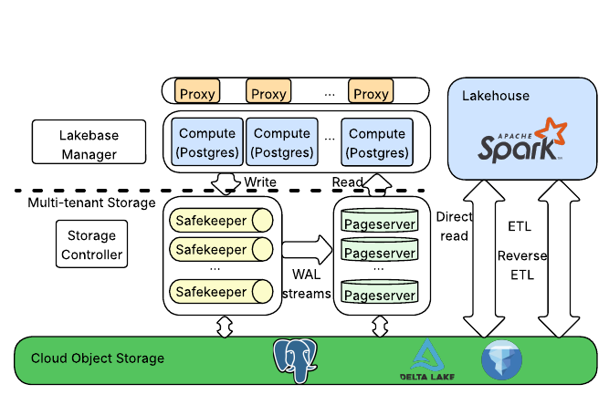
图 3：Lakebase 架构。
3.3 PostgreSQL 计算
一个 Lakebase 实例有一个 PostgreSQL 主库以及可选的只读副本。主库把数据复制到 3 个 Safekeeper，并初始分配一个 Pageserver；随着数据库增长，其数据会分片到更多 Pageserver。
计算节点运行 PostgreSQL，并配有实现 PostgreSQL SMGR API 的定制存储管理器，它负责与 Pageserver 通信并更新本地 SSD 缓存。一次 SMGR 读由本地缓存服务，未命中时从 Pageserver 获取并缓存。一次 SMGR 写只更新本地缓存，因为 PostgreSQL 恢复时只需要已持久化的 WAL。
计算节点还运行一个 WAL proposer，它持续把 WAL 记录广播给所有 Safekeeper，并在某次写入在多数派上持久后推进。
主库启动时向 Pageserver 请求 basebackup（启动所需的元数据文件），从而避免做检查点；恢复点是 Pageserver 已摄入的最后一条 WAL 记录，而不是最后一个检查点。
读性能通过增加只读副本横向扩展，副本共享主库的 Safekeeper，并持续流式接收 WAL 以更新本地缓存。Lakebase 还支持固定在给定 LSN 上的静态（只读）副本，用于时间旅行查询。
3.4 非 PostgreSQL 计算
除 PostgreSQL 计算之外，外部引擎可以直接操作共享存储，从而对 Lakebase 与 Lakehouse 数据获得统一视图。Lakehouse 表被直接同步进 Lakebase 存储，绕开 PostgreSQL 计算。诸如 Spark 之类的分布式执行器生成符合 PostgreSQL 规范的页面文件并写入对象存储，随后 PostgreSQL 将其作为普通表消费。
在分析场景中，诸如 Lakehouse//RT 的查询引擎直接从对象存储读取不可变的 PostgreSQL 页面文件：查询绑定到一个已提交快照，在一致视图上运行，同时绕开 PostgreSQL 计算。这提供了对活跃数据的零拷贝访问而不干扰事务负载，并支持横向可扩展的向量化处理。这种共享存储上的多引擎访问是第三代数据库的标志；第二代系统只通过主引擎暴露数据。通过在对象存储上以开放的 PostgreSQL 页格式持久化数据，Lakebase 把数据访问与任何单一引擎解耦。
3.5 存储组件
存储控制器为每个项目创建一个存储租户（storage tenant），内含多条时间线（timeline）；每个计算属于一个租户与一条时间线。项目从一条根时间线开始，分支或按时间点恢复（PITR）会在同一租户下创建一条新时间线。同一租户的各条时间线共置于相同的 Pageserver 上，使分支能高效读取其写时复制祖先的数据，但它们可能复制到不同的 Safekeeper 上。
3.5.1 Safekeeper。
Safekeeper（SK）维护一组彼此隔离的时间线，每条时间线存放 WAL 段。它把最近的 WAL 保存在本地磁盘上，并主动把已获多数派提交的段上传到对象存储。SK 时间线接受来自 PostgreSQL 主库的写入，并把 WAL 流式发送给副本与 Pageserver。
一条时间线使用类 Raft [37] 协议在 SK 之间复制 WAL：PostgreSQL 主库是 WAL proposer，SK 是 acceptor。一条 WAL 记录在多数派写入磁盘后即为持久，系统会把 WAL 从最领先的 SK 副本推送到落后的副本以保证冗余。
为防止脑裂（即多个计算都声称自己是写入者），PostgreSQL 计算必须先选举自己为 leader 才能写入，而 SK 多数派只确认一个 leader。SK 维护一个单调递增的 term 号。新的计算主库会递增 term 并向 SK 多数派提议自己。SK 只接受它们见过的最高 term。一条 WAL 记录只有在多数派 SK 在当前 term 下将其落盘后才会被确认。一旦计算检测到 term 变化，它必须重新选举自己为 leader。
3.5.2 Pageserver。
Pageserver（PS）从 SK 拉取 WAL 流，维护租户及其时间线，并向计算暴露两个 API：GetPage@LSN 与 GetBaseBackup。每条时间线持续从 SK 读取 WAL 并物化页面，把增量 WAL 记录与已物化的整页镜像组织成类 LSM 树的结构。
在一次 GetPage@LSN 调用中，PS 找到更早 LSN 上最近的一整页镜像，把增量 WAL 记录回放到请求的 LSN 上，然后返回该页。该请求会阻塞，直到 PS 已摄入到该 LSN 的 WAL。
PS 会把树与元数据的快照上传到对象存储以支持快速崩溃恢复。每条时间线保留一个热备（hot standby），它会下载快照与热层文件，因此当主库故障时能迅速接管，并从已缓存的层中服务 GetPage 请求。
3.5.3 存储控制器。
存储控制器（SC）管理所有 SK 与 PS。它把每条新时间线分配给最空闲、且具备可用区亲和性的 SK 与 PS，以兼顾性能与容错，并随负载演化在后台重新优化布局。
SC 通过周期性存活探测监控 SK 与 PS 的健康状况。SK 故障时，它迅速把受影响的时间线迁移到新副本以恢复冗余；PS 故障时，它通知热备接管。
当数据库变得很大时，SC 会透明地、零停机地把其时间线分片到多个 PS 上，以提升 GetPage 吞吐。每个分片从某个 SK 副本摄入与其相关的 WAL 记录。
4 存储与计算分离
本节详述 Lakebase 存算分离背后的机制：数据如何被持久化、版本化，以及如何跨系统各组件被服务。
4.1 数据库日志（WAL）与 LSN
WAL 存储对性能、持久性与正确性都至关重要。计算主库生成 WAL 字节流，经 Safekeeper（SK）持久地存入对象存储。Pageserver（PS）从 SK 接收 WAL 记录并重放它们，以在特定 LSN 上物化页面镜像，并按请求返回给计算。 计算、SK 与 PS 各自跟踪多种 LSN（WAL 流中的字节偏移），以提供持久性、事务一致性与快速崩溃恢复。
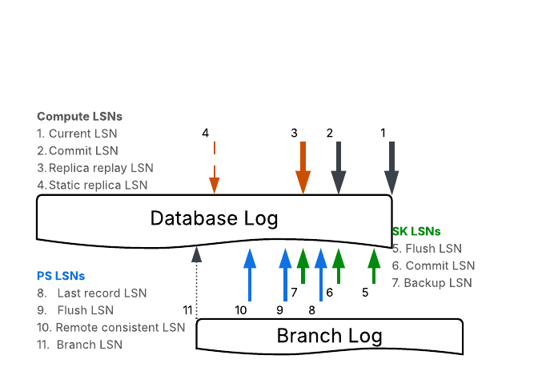
图 4：各组件维护的 WAL 与 LSN。
如图 4 所示，计算主库跟踪当前 LSN（1）与提交 LSN（2）。它把 WAL 追加到当前 LSN，把每条记录复制到所有 SK，并在记录于多数派上持久后推进提交 LSN；崩溃恢复时它恢复到提交 LSN 为止的数据。
计算副本跟踪其最后回放 LSN（3），低于该值的数据对其可见。它从 SK 拉取 WAL 流并回放记录以更新本地缓存，每回放一条就推进最后回放 LSN。 静态副本则固定在某个特定 LSN（4）上，只读到该位置。
SK 维护 flush、commit 与 backup 三种 LSN。它持续把收到的 WAL 落盘，推进 flush LSN（5）；主库把其提交 LSN（6）通知所有 SK，SK 只把低于该值的数据流式发给 Pageserver。为保证持久性，SK 把提交 LSN 之前的所有 WAL 段上传到对象存储，由 backup LSN（7）跟踪，并删除低于该值的本地磁盘段。
PS 把来自 SK 的 WAL 摄入一种优化过的存储格式（4.3 节），在摄入速度与高效 GetPage 请求之间取得平衡。它在内存摄入时推进 last record LSN（8），随后批量把记录落盘，推进 flush LSN（9）（崩溃时即从该位置重新水合）。它还会把已落盘文件上传到远端存储，推进 remote consistent LSN（10）；若本地不存在有效的 flush LSN（例如磁盘故障或首次提供服务），则从该位置恢复。
4.2 分支
Lakebase 的分支以 O(1) 时间分叉数据库，不做任何昂贵的物理数据复制。当数据库历史被分叉时，会创建一条新分支，原历史成为父分支。父分支与子分支共享到分支 LSN（11）为止的历史（以及同一份物理存储），此后各自分叉。分支 LSN 的选择必须保证：在创建分支的那一刻，父分支在该 LSN 上的每一页都能被重建。为简单起见，我们把分支 LSN 的选择限制在父分支 PITR 窗口内的 LSN。如图 4 所示，子分支创建后，其新的历史/WAL 记录与父分支的记录独立存放。任何在分支 LSN 上尚未提交的事务，其处理方式与崩溃恢复中的在途事务完全相同：它们会被中止，未完成的数据修改在子分支上不可见。
子分支刚创建时，只包含对父分支时间线 ID 与分支 LSN 的引用。 子分支上的 GetPage 请求会递归进入父分支，以获取子分支上不直接可用的历史或页面数据。子分支被建模为 Lakebase 存储中的一条新时间线。因此，压缩与垃圾回收等时间线级操作在子分支与父分支上基本独立进行。
Lakebase 支持把子分支从父分支上分离（detach）。分离分支是瞬时完成的，属于元数据操作。PS 跟踪祖先关系，并异步把祖先的数据复制到被分离的分支上。被分离的分支可以重新挂接到其某个祖先之下。Lakebase 目前不支持合并两条分支。调和分叉后的物理数据缺乏良好定义，且通常需要应用层来解决冲突。
4.3 Pageserver 存储格式
所有持久化数据都以标准 PostgreSQL 页格式存放在云对象存储上，任何消费 PostgreSQL 页面的引擎无需 Lakebase 计算层即可读取。PS 从 SK 摄入 WAL 记录，并把它们物化为一种受 LSM 树启发的结构，从而在维持高 WAL 摄入速率的同时支持高效的页级访问以服务 GetPage 请求。
PS 的存储格式是写优化的。到达的 WAL 记录被追加到内存缓冲，缓冲一旦足够大或足够旧，就落盘到 PS 的本地磁盘，并作为增量层（delta layer）上传到远端存储——它是一个覆盖某段键与 LSN 范围的原始 WAL 记录文件，如图 5 所示。增量层摄入不涉及任何 WAL 重放或转换，使 PS 能跟上写密集负载。
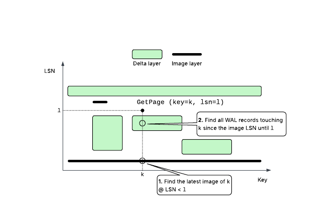
图 5：Pageserver 的存储组织。
图 5 展示了 Lakebase 的存储格式如何在 LSN 与键两个维度上组织层文件，以及 PS 在此过程中如何解析出页面镜像以满足 GetPage@LSN 请求。为了在 PITR 窗口内任意 LSN 上高效读取，PS 沿 LSN 与键两个维度组织层文件，并运行后台的 LSM 树式压缩：把增量层中的 WAL 记录回放到已有的页面镜像上，生成新的镜像层（image layer，即某个 LSN 上的一段键范围）。一次 GetPage 请求指定页键与 LSN，在这棵二维树中查找到基础镜像（来自某个镜像层）与需要回放的增量 WAL 记录，执行重放后返回该页。压缩经过调优，以在镜像重写带来的写放大与回放长 WAL 链的读延迟之间取得平衡。当为把某个键物化到最新 LSN 所需、位于最新可用镜像层之上的增量层数量超过阈值时，PS 会触发一次镜像层压缩，把最新 LSN 上的数据物化为新的镜像层。
PS 以云对象存储作为已持久化层文件的唯一事实来源。它把这些文件缓存在临时的本地 SSD 上以便快速访问。PS 在远端存储中维护一个索引文件，列出某条时间线中的所有层文件。当本地磁盘空间不足时，PS 逐出 LRU 的本地层文件；之后若读取到已被逐出的层文件，会从远端存储重新下载。
该格式支持分支：如果 PS 无法从本时间线自己的层文件满足一次读取，它会递归搜索父时间线的层——其元数据存放在时间线索引文件中。因此，过深的分支层级会拖慢读取性能，因为一次读取会跨越更多时间线。当智能体在数据库上完成工作后，生产数据库可以从分离该分支并将其提升为根时间线中获益。
后台垃圾回收会周期性地删除那些历史数据已超出 PITR 窗口、且未来回放不再需要的增量层与镜像层。
4.3.1 放大分析。
我们沿标准 LSM 维度刻画 Pageserver 存储格式的成本。设 N 为最新 LSN 上的活跃数据集大小（以页计），w 为 WAL（写）摄入速率，P 为按时间点恢复（PITR）窗口——超出该窗口的历史即可回收。两个旋钮主导其行为。镜像阈值 I 是某个键范围上允许堆叠的增量层最大数量，超过它就写入一份全新镜像（该范围的完整快照）；它限定了单次读取的重建深度。GC 压缩触发比 R 表示：当新累积的历史达到上次压缩后基底的 R 倍时触发垃圾回收式压缩，把 GC 水平线以下的所有历史折叠为一个新基底（在水平线处的物化快照）。
写放大是常数级的，$O(1)$：每个字节在增量摄入时写一次，另有镜像创建带来的 $O(1/I)$ 项（一份新镜像由其触发的 $I$ 个增量来摊销），以及 GC 压缩带来的 $O(1/R)$ 项（每次折叠写入一份大小约为 $N$ 的基底，但由自上次以来累积的约 $R \cdot N$ 的历史来摊销）。与传统 LSM 树的一个主要区别是：我们的存储格式使用固定的层数。我们并不声称该存储格式是最先进的，而是为可预测性对它做了调优。
读路径：PS 只支持 GetPage@LSN 这一个 API，没有范围扫描原语。GetPage@LSN 的成本为 $O(I)$ 次层访问，因为镜像阈值限定了重建一个页面所必须回放的增量链长度。请注意，在我们的评估中，计算侧缓存通常能达到 >98.5% 的命中率，从而掩盖了 GetPage@LSN 操作的大部分延迟。
我们把 Lakebase 的空间放大定义为（Pageserver 总存储大小）/（用户在最新 LSN 上的数据库逻辑大小）。这在本质上是一个高估，因为我们必须保留 PITR 历史，并就此向用户计费。在 Lakebase 中，空间放大为 $O(1 + R + \frac{w \cdot P}{N})$，由三部分构成：活跃状态的一份物化（$1$）、尚未回收的 GC 余量（$R$），以及窗口内保留的历史（$w \cdot P$）——后者通常是主导项。在我们的生产集群中，我们观测到约 $7\times$ 的空间放大。我们期望进一步提高存储格式的效率，但生产中观测到的数值已证明足够。
4.4 读路径
OLTP 应用要求快速读取。图 6 展示了 Lakebase 的读路径。原始 PostgreSQL 从本地文件读取页面，Lakebase 则把工作集缓存在计算侧的本地文件缓存（LFC）中，以获得相当的性能。
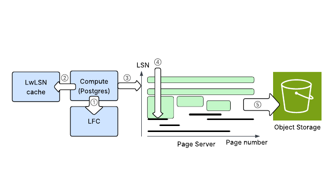
图 6：读路径 GetPage@LSN。
缓存命中会立即返回页面（1）；未命中则向 Pageserver 发出 GetPage@LSN（3）。为了一致读，请求必须携带正确的 LSN。在当前 LSN 上发起 GetPage 会很慢，因为 Pageserver 必须阻塞等待自己摄入到该 LSN——毕竟该页可能在其 last record LSN 与当前 LSN 之间发生了变化。为避免这一点，请求携带两个 LSN：请求 LSN 指定要获取的页面版本，not-modified-since LSN 则承诺该页在它与请求 LSN 之间没有变化，于是 Pageserver 只需摄入到 not-modified-since LSN 即可。
计算节点维护一个定长的 last-written-LSN 缓存（LwLSN），把每个页面映射到其 not-modified-since LSN（2），并在脏页被逐出时更新为该页的 LSN。GetPage 在命中时使用 LwLSN 条目，未命中时使用全局 last-written LSN。
发生 LFC 未命中时，PS 按 4.3 节所述处理 GetPage@LSN，期间可能从远端存储获取层文件（4 与 5）。计算节点把返回的页面镜像写入其 LFC 并更新 LwLSN 缓存。预取读走的是同一条路径。
4.5 写路径
图 7 展示了 Lakebase 的写路径。Lakebase 计算主库以类 Raft 协议复制 PostgreSQL 的 WAL，作为 leader 通过一个以 PostgreSQL 扩展形式实现的 WAL proposer 把 WAL 追加到 Safekeeper。启动时，proposer 通过提出一个新的 term 来选举自己为 leader；一旦 SK 多数派确认了这个更高的 term，它便开始追加 WAL（1）。
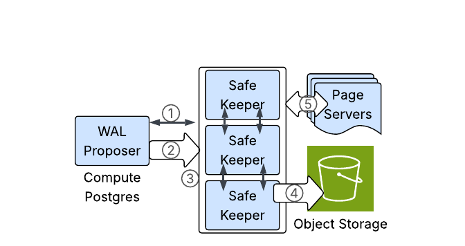
图 7：写路径。
proposer 跟踪每个 SK 的 flush LSN，并把提交 LSN 设为多数派的 flush LSN。SK 把每条 WAL 记录追加到本地段文件，周期性落盘以推进 flush LSN，并返回自己的 flush LSN 与已知的提交 LSN（2）。
一旦多数派落盘，proposer 就推进提交 LSN，因此落后的 SK 副本可能降低冗余度；proposer 会发现落后的 SK 副本，并从最领先的副本回填其缺失的 WAL。
SK 主动把 WAL 段上传到对象存储以保证持久性（4）。3 个 SK 之间 gossip 交流各自的提交 LSN（3），并确定性地选出一个上传 leader，在不同时间线之间做负载均衡；一旦上传完成，低于 backup LSN 的本地段就可以删除。
当写入速度超过 PS 的摄入速度时，proposer 施加背压：PS 通过 SK 上报三个 LSN（最后摄入、已落盘到本地磁盘、已上传到对象存储），只要其中任何一个落后提交 LSN 超过阈值，proposer 就会限流写入。这些阈值在写吞吐与读延迟、恢复时间之间做权衡。
Pageserver 从 SK 摄入 WAL（5）。SK 解码每条记录所影响的页 ID，只把它路由到相关的 Pageserver；元数据（例如关系大小）仅由特殊的 Shard-0 跟踪，因此所有元数据更新都发往那里。Pageserver 优先从本可用区内提交 LSN 最高的 SK 副本摄入。
在发生可用区+1 级故障的情况下，系统提供强持久性保证。第一，PS 紧密跟随 WAL 流且滞后极小，因此它保留了最近数据的额外副本。第二，在实践中，恢复一个失效的 SK 只需要复制尚未备份到远端存储的少数几个 16 MB WAL 段。
4.6 可用性
Lakebase 的计算与存储组件都是高可用的，见图 8。一个计算及其副本跨不同可用区分布，得益于预热池（warm pool）与存储解耦，失效的主库或副本可在 500 ms 内由新节点修复。客户可以配置带热备的计算高可用组，以便故障时随时接管。计算写入跨 3 个可用区的 3 个 SK 复制，可容忍单节点或单可用区故障。
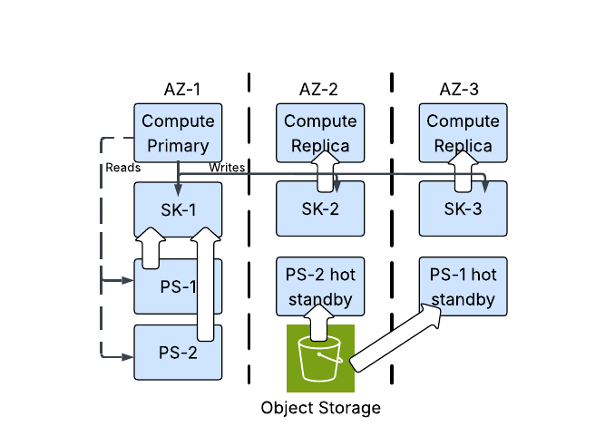
图 8：高可用。
PS 优先从本可用区内的 SK 副本拉取 WAL 流。每个 PS 分片在另一个可用区保留一个热备，它会主动下载主库快照中最近使用的层文件，因此主库失效时它能立即接管，并从已缓存的热数据服务 GetPage 请求。故障转移是自动的，无需操作员介入。
4.7 计算只读副本
Lakebase 通过只读副本横向扩展读性能。副本从一个精简的 basebackup 初始化，并连接与主库相同的 Safekeeper 与 Pageserver。Lakebase 支持两类副本：一类是跟随主库的普通副本，另一类是固定在特定 LSN 上的静态副本，用于时间旅行与临时查询。
4.7.1 只读副本。
只读副本从 SK 拉取 WAL 流并持续回放记录以保持其缓存最新，对于不在其缓存中的页面则跳过相应记录。这是安全的，因为它总能从 Pageserver 取到页面。
主库与副本的可用性被解耦。副本在主库故障期间仍然可用并继续摄入；若失去当前的 SK，它会切换到下一个可用的 SK。
Lakebase 的只读副本可以在任意 LSN 上创建并立即对外提供查询，看到最新数据。这比开源 PostgreSQL 更快——后者必须从最后一个检查点开始重做，并等到一条运行中事务的 WAL 记录出现后才能接受连接；Lakebase 则从 PS 的 last record LSN 初始化，并从 PostgreSQL 提交日志构建运行中事务列表。
4.7.2 静态副本。
静态副本固定在 PITR 窗口内的某个 LSN 上。它使用同样的租约（lease）机制阻止 Pageserver 回收它所需的版本，但与只读副本不同，它不拉取 SK 的 WAL 流，只是缓存页面以获得更低延迟。
5 计算自动伸缩
Lakebase 的计算是无服务器的：它们随负载升高而扩容、随之降低而缩容、空闲时缩容到零，免除了手动容量规划，并使计算成本与用量成正比。Kubernetes 等流行的容器编排器并不适合为 Lakebase 计算供给资源：既有工作 [41] 表明，宿主机与容器之间的弱隔离是安全漏洞的主要来源之一，而在云托管 Kubernetes 中供给新资源，对某些虚拟机可能耗时数十到数百秒 [7]。
为克服这一点，Lakebase 的计算构建在 NeonVM 之上——一个在 Kubernetes 中运行虚拟机、支持原地垂直伸缩与热迁移的 API；每个计算作为独立的 QEMU/KVM 虚拟机运行。在其内部，Lakebase 增加了一个可调整大小的定制缓存，以补充 PostgreSQL 固定大小的共享缓冲区。
在 NeonVM 之上，我们维护一个预热计算池，使创建数据库或从零扩容时的资源供给不落在关键路径上，从而让 Lakebase 能在低于 500 ms 的中位数内唤醒一个数据库。
Lakebase 每天处理数百万次伸缩操作，因此某些策略性选择是为了限制维护负担。以磁盘承载主计算缓存就是一个例子：即使缓存能装进内存，也使用操作系统的页缓存而非普通内存分配，这缓解了内存伸缩期间内核分配器的压力——否则普通分配会让这一过程更加脆弱。
5.1 伸缩机制
NeonVM 支持在不重启虚拟机的前提下原地调整 CPU、内存与磁盘。CPU 伸缩通过 guest agent 启用或禁用客户机操作系统中的单个 CPU。内存伸缩使用 virtio-mem，在可移动内存与内核内存之间平衡比例；我们限制伸缩范围，以避免碎片导致的缩容失败。磁盘伸缩结合协作式回收——文件系统发出的 discard 操作会转换为主机后端文件上的打洞——以及对 swap 和临时存储的超售。由磁盘承载的计算缓存在伸缩操作期间同步调整大小。
5.2 伸缩策略
Lakebase 的自动伸缩策略由每台主机上的 autoscaler-agent 执行，它采集指标、征求调度器批准并设置期望的 NeonVM 规格。它每 5 秒从每个计算实例抓取一次指标，只保留最近的值。伸缩算法实际上是无状态的；用于抑制抖动的状态保存在计算实例内部，以更长时间窗口内的负载度量形式暴露。
伸缩是线性且均匀的，以 1 GiB 内存及相应比例 CPU 作为一个伸缩单位递增。每次采集后，CPU、内存与缓存的期望单位分别独立估算，虚拟机规格取其最大值。
5.2.1 CPU 伸缩策略。
CPU 目标混合了来自客户机内核的 1 分钟与 5 分钟负载均值：当 1 分钟均值与 5 分钟均值差异显著时使用 1 分钟均值（以保证响应性），否则使用 5 分钟均值（以降低抖动）。
5.2.2 缓存伸缩策略。
OLTP 性能通常取决于工作集是否能装进内存，而在存储与计算分离之后这一点更为重要；但用户很难为工作集定容，更难为计算配置合适的内存来容纳它。Lakebase 会自动估算工作集：我们的定制计算缓存维护一个改造过的 HyperLogLog，跟踪一段时间内访问过的唯一页面数量。
HyperLogLog 各桶中的每个位都被替换为该位对应哈希最近一次非零值的时间戳，从而廉价地近似出自某个过去时刻以来访问过的唯一页面数。随后 autoscaler-agent 用平台期检测算法，基于过去 1 至 60 分钟内访问的唯一页面来估算工作集。为避免二元切分点带来的不稳定性，伸缩取值是所有切分点的加权平均，并把增长率外推到一小时；对于更大的负载，越早的切分点权重越低，从而在逐出成本超过计算节省时降低抖动。
5.2.3 内存伸缩策略。
期望内存大小需同时满足两种需求：常见情况是计算缓存应占用绝大多数内存；不常见情况是分配密集型的操作可能触发扩容，但我们需要为缓存预留相应更大的内存量。
对于常见情况，内存伸缩策略设定的期望大小使得：已分配内存量加上处于期望缓存大小范围内的页缓存内存量，低于提供给虚拟机的总内存的 90%。对于分配密集型情况，我们还确保仅已分配内存就低于总内存的 75%。
5.2.4 内存压力下的快速路径。
除周期性指标采集外，我们还为内存压力下的"立即"扩容维护一条快速路径。guest agent 每 100 ms 轮询一次内存使用量，并可直接向 autoscaler-agent 发起请求以获取更多内存，而不受最近一次指标的限制。
5.3 缩容到零与快速供给
缩容到零——即自动挂起空闲的计算资源——同时解决了成本与运维两方面的关切。它消除了常开供给带来的成本下限（这对第 2 节描述的短生命周期负载尤其重要），也让用户不必手工管理临时资源的生命周期。快速供给或从零扩容使这一切对用户透明。Lakebase 借助一个预热虚拟机池把供给移出关键路径，实现低于 500 ms 的冷启动中位数。
5.3.1 终止计算实例。
缩容到零由一个周期性任务处理，它检查距每个计算实例最后一次查询发出的时间。若该时长超过用户配置的超时（默认 5 分钟），我们就关闭该计算实例。除已持久化到存储的状态之外，计算重启不会保留任何状态。完整的虚拟机终止与清理随后异步进行。
5.3.2 唤醒计算实例。
用户可以连接一个此前已缩容到零的数据库，系统会自动为其实例化。在收到 PostgreSQL 入站连接时，Lakebase proxy 会先挂起该连接，并向池中申请分配一个计算实例。分配过程中，该计算实例从 Pageserver 下载 basebackup 并启动；之后 proxy 即可开始向该计算实例转发连接。随后该虚拟机被异步调整为用户配置的最小规格。
5.3.3 预热池。
从技术上加速虚拟机供给时间很有挑战。因此我们把供给移出关键路径：预先将虚拟机置入预热池，使用户可见的冷启动时间只包含与存储的通信以及计算实例内 PostgreSQL 的启动。
该池中的虚拟机规格统一，原地垂直伸缩允许它们在分配时被调整规格，而不必为不同的用户配置伸缩范围维护各自独立的池。在计算实例内部，二进制文件会被预热，以避免惰性内存分配或磁盘 I/O 带来的启动延迟。
Lakebase 生产环境观测到启动计算请求存在季节性变化与突发激增。该池使用一个机器学习模型来预测需求并据此定容，模型考虑了季节性与用户活动的周期性尖峰。
6 与 Lakehouse 的集成
Lakebase 把所有数据以开放的 PostgreSQL 页格式持久化在云对象存储上，并通过 Pageserver 暴露一致的、可按 LSN 寻址的页面视图。这让外部引擎可以直接与 Lakebase 存储交互，而无需经由 PostgreSQL 计算层。本节描述 Lakebase 如何利用这一特性，沿三条轴线与 Lakehouse 生态集成：通过 Unity Catalog 实现统一治理、从 Lakehouse 到 Lakebase 的高效数据摄入，以及分布式查询引擎对 Lakebase 数据的分析访问。
6.1 统一治理与身份
Lakebase 通过与 Unity Catalog（UC）集成来集中化安全，实现统一认证与授权。调用方的 Databricks 有效身份经 OAuth 传递到 Lakebase，并在首次使用时映射为 PostgreSQL 角色，因此 Spark 流水线或模型服务等下游服务可以以自身身份连接，无需单独管理数据库凭据。
我们改造了 Unity Catalog，把访问控制与执行下放给 Lakebase，从而统一直接 PostgreSQL 连接与经由目录的访问。管理员可以通过 Unity Catalog 下发标准授权（例如 GRANT SELECT），这些授权会被翻译成原生 PostgreSQL 查询并同步生效。Unity Catalog 的目录元数据也直接从 PostgreSQL 系统表实时提供，因此 UC 中的视图始终反映数据库的当前状态，消除了治理层与运行库之间的 ACL 漂移。
6.2 服务 Lakehouse 数据
Databricks 客户在 Lakehouse 中拥有极其珍贵的"金"数据集，它们由连接并聚合众多异构数据源的复杂分析流水线产出。这些经过治理的数据集计算与刷新成本高昂。客户希望有一个低延迟、高吞吐的服务层，来弥合分析流水线与生产负载之间的鸿沟。
我们通过 Synced Tables 实现了这一点——这是一个简单抽象，支持把数据从 Lakehouse 高效同步到 Lakebase。为调和"高吞吐摄入"与"近实时新鲜度"这对相互竞争的需求，我们设计了两条不同的写入路径。标准路径创建一个 Spark 流式 DataFrame，读取 Delta 变更流并更新 PostgreSQL 中的目标表。
对于大规模快照加载，我们引入 Direct-to-Storage 摄入模式。分布式 Spark 执行器构造符合 PostgreSQL 规范的页面文件并直接写入对象存储，只把元数据记录经由 Lakebase 计算传递。该模式实现了横向可扩展性，避开了通常成为 OLTP 数据库瓶颈的写吞吐限制，并为往往对延迟敏感的活跃负载提供了隔离。快照加载是一种能力强大的工具，可用于多种场景：数据集的初始加载、时间分区数据集的周期性同步，以及批量 ML 特征计算（可与实时数据合并，以提供长窗口特征）。未来，Direct-to-Storage 还可用于优化其他批量操作，例如分布式索引构建与物理 schema 变更。
Direct-to-Storage 加载路径在关系粒度上提供原子性。Spark 先物化完整的表页面集合并将其上传到对象存储，随后 Lakebase 计算在一个事务中完成仅涉及元数据的关系切换。隔离性通过生成带有冻结可见性元数据的新页面来保持，使其对任何快照能观察到该切换的事务立即可见。持久性来自在提交前把所有页面持久化到 S3，同时关系切换的 WAL 记录通过 Safekeeper 使用标准 WAL 复制协议进行复制。为保持一致性，针对正在执行 Direct-to-Storage 快照加载的表，并发 DML 操作会被拒绝。
6.3 在 Lakebase 数据上做分析
用户经常需要对运行数据做分析访问，从实时的临时查询到复杂的数据流水线。Lakebase 通过两条互补的集成路径满足这一需求，它们天生具备成本效率，并尽量降低对运行库的开销。
对于数据流水线，我们引入到 Lakehouse 的原生同步，使用一个逻辑解码扩展（wal2delta）。该扩展挂入 PostgreSQL 逻辑复制流，解码 WAL 记录并以 SCD Type 2 格式直接追加到 Delta 表。下游 Spark 作业可以消费该历史流以做复杂转换，或按需把它压缩成快照。
对于实时分析，我们为 Spark [49] 与 Databricks 的实时分析引擎 Lakehouse//RT [31] 等分析引擎引入 Direct Access 模式，使它们的计算可以直接从共享存储层（对象存储或 Pageserver）读取 PostgreSQL 页面文件。该模式保留了传统联邦查询的主要优势——对活跃数据的即时、零拷贝访问——同时绕开 PostgreSQL 计算。通过把执行转移到分析引擎，我们避免了 OLTP 资源争抢，并实现了横向可扩展性、更先进的分布式查询操作与向量化执行。例如，Lakehouse//RT 在目标 LSN 上获取一致的 PostgreSQL 页面，使用 SIMD 解析与简化的 MVCC 检查器。解析得到的 Arrow 批次按关系与页范围缓存在内存中。当数据发生变化时，Pageserver 提供一个 modified-blocks 位图——即两个 LSN 之间发生变化页面的 roaring bitmap——从而只刷新过期页面。在 7.4 节中，我们证明 Direct Access 对大多数分析负载都高效，且无需额外维护一份持久化的列式副本。
7 评估
我们围绕系统设计所针对的核心负载维度评估 Lakebase。我们首先测量分支与弹性自动伸缩的性能，二者对智能体负载都至关重要；随后评估核心 OLTP 性能以及 Lakehouse 集成带来的收益。
7.1 分支性能
在 Lakebase 上分支几乎瞬时完成。它是一个 $O(1)$ 元数据操作，只写一个记录新时间线标识符的远端文件，细节见 4.2 节。分支恢复仅仅是把计算主库挂接到此前的时间线上。
计算启动性能对智能体负载至关重要。Lakebase 始终能实现亚秒级启动。图 9 展示了我们在生产环境中观测到的第 95 百分位计算启动时间（毫秒）。启动时间始终低于 500 ms。这是因为 Lakebase manager 维护着一个预热计算虚拟机池，可随时用于启动新的计算实例。此外，计算启动不执行崩溃恢复：PostgreSQL 启动时把 redo LSN 设为 Pageserver 上已摄入的 last record LSN，而不等待 PS 追上 SK 的最新进度。
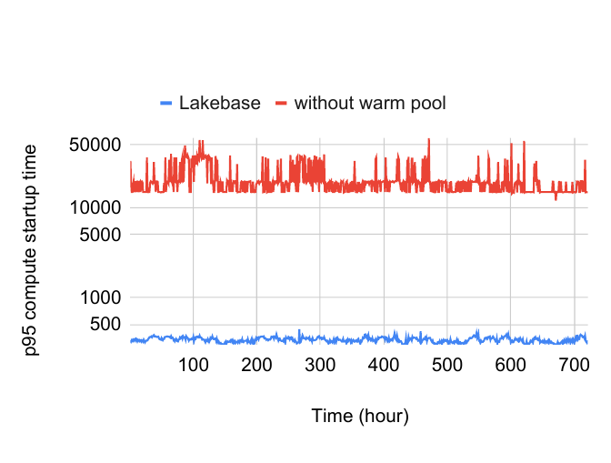
图 9：计算启动时间的 P95（毫秒），Y 轴为对数刻度。
计算启动时间可拆解为四个步骤。启动一个计算实例首先向 Pageserver 请求 basebackup。basebackup 是一个 tarball，包含启动计算所需的全部元数据，通常只需 100 ms。接下来它同步所有 Safekeeper，以确保 SK 副本是最新的；这一步同时声明当前计算为唯一主库，以防脑裂。同步 SK 只需 5 ms，因为故障罕见，且正常情况下写入会复制到所有 SK 副本。随后计算实例启动，耗时 150 ms。最后一步是配置计算，耗时不到 5 ms。
相比之下，没有预热池时启动一个新计算需要长达数分钟，尾延迟甚至可达数小时。我们观察到云厂商有时会因各种原因花费很长时间来供给一台新虚拟机。
7.2 自动伸缩性能
为展示自动伸缩各维度，我们从生产环境的一个股票交易应用中提取了负载。该负载呈现昼夜模式：白天达到峰值，收市后保持低位。我们使用一个开放世界模拟向数据库发送目标 QPS。计算配置为最少 1 个 CPU、最多 7 个 CPU。
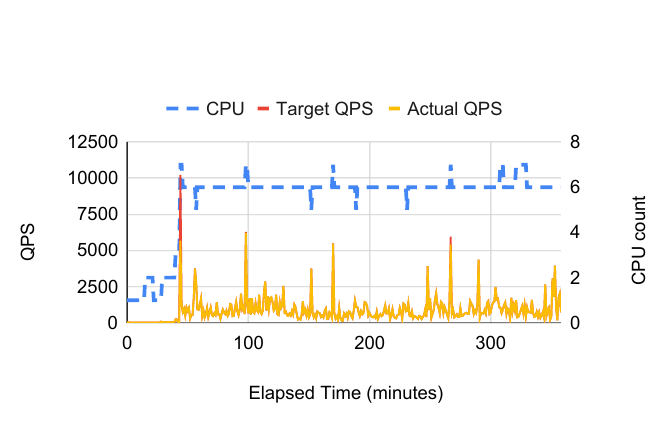
图 10：计算自动伸缩。
初始时数据库负载较低，计算使用 1 个 CPU。当应用向系统施加更高负载时，计算上的 autoscaling agent 检测到 CPU 使用率上升，并额外分配 3 个 CPU。如图 10 中的实际 QPS 所示，伸缩操作不会干扰客户负载。在第 44 分钟开市时，应用向数据库发送查询激增，从每秒 32 次跃升至每秒 1 万次。估算的工作集大小也超过了当前 LFC 大小。autoscaling agent 观测到高 CPU 使用率，且 LFC 命中率低于 30%，于是迅速反应，直接把可用 CPU 数提升到该计算配置的上限。计算 LFC 也随 CPU 规格一起扩容。
白天负载不断波动，agent 依据负载持续调整可用 CPU。可用 CPU 数稳定在约 6 个。当负载暂时升高（降低）时，它把可用 CPU 数提升到 7（降至 5）。在整场实验中，实际 QPS 几乎与目标 QPS 完全吻合。这表明 autoscaling agent 能够及时地扩容与缩容计算规格，以支撑数据库负载。当应用长时间空闲（默认 5 分钟）时，计算实例会被关闭。
我们还用固定 7 CPU 的计算做了同样的实验。自动伸缩计算的查询响应时间仅略高，因为固定规格计算一开始就拥有更大的 LFC，缓存未命中更少；一旦负载稳定，两者的延迟就变得相当。自动伸缩计算总体上消耗的 CPU 小时更少：它在低负载期间降配运行，空闲时完全关闭，而固定规格计算则持续消耗其全部配额。
7.3 OLTP 性能
为在 OLTP 负载下评估 Lakebase，我们使用 HammerDB TPROC-C 基准与参考系统做对比。第一个对比对象是典型的第二代、存算分离数据库（Gen-2）。为使对比在持久性上对等，我们还与在跨可用区复制磁盘上运行 PostgreSQL 的第一代系统（Gen-1）对比，它在提交时会附加同步的跨可用区复制。我们聚焦于把整个 TPROC-C 工作集放入 DRAM 的缓存场景。
我们供给四个硬件档位：1、4、16 与 24 vCPU。每个 vCPU 使用 16 个 warehouse。每个虚拟用户访问所有 warehouse。我们把虚拟用户数按 2 的幂从 1 扫到 512。吞吐以每分钟 NewOrder 事务数（NOPM）报告，并以 p95 NewOrder 延迟不超过 20 ms 为约束。表 1 给出各档位在 p95 NewOrder 延迟不超过 20 ms 前提下的峰值 NOPM，吞吐以 Gen-1 归一化。表中第一项被省略，因为 Gen-1 提供方不提供 1 vCPU 配置。同样，该提供方也不支持 Gen-1 的 24 vCPU 档位，因此我们改用次优可得的 32 vCPU 配置，并以与 Gen-2 和 Lakebase 在 24 vCPU 时相同的 384 个 warehouse 保持可比。
| 规格（vCPU） | Gen-1 | Gen-2 | Lakebase |
|---|---|---|---|
| 1 | - | 9.0 (1.0x) | 23.3 (2.6x) |
| 4 | 92.6 (1.0x) | 61.7 (0.7x) | 86.8 (1.0x) |
| 16 | 118.3 (1.0x) | 265.7 (2.3x) | 331.3 (2.8x) |
| 24 | 96.8 (1.0x) | 407.5 (4.2x) | 515.6 (5.3x) |
表 1：HammerDB TPROC-C 峰值 NOPM（单位：千）。*
* Gen-1 没有 24 vCPU 档位；使用次优可得的 32 vCPU 配置。*
我们报告单 vCPU 吞吐，因为在典型部署中计算成本主导了整体服务成本，因而它是成本效率的一个代理指标。例如，一台 AWS EC2 R8gd.4xlarge 计算实例按需价格约为 \$1.18/小时，而在 AWS S3 Standard 上保留 10 GB 的成本约为 \$0.0003/小时——低了 3 个数量级以上——并且即使在高强度摄入下，按请求（PUT/GET）计费与压缩分层费用相对于计算仍然很小。我们对比的是具有代表性的第一代与第二代原型（Gen-1 与 Gen-2），而非每一家具体的商业产品。
Lakebase 在所有档位上的吞吐都达到或超过 Gen-2。在 1 vCPU 时，Lakebase 的吞吐是 Gen-2 的 2.6 倍。在这个规模上，Gen-2 的存储扇出占用了相当一部分可用核心，而 Lakebase 以单次多数派复制的写方式流式发送 WAL，为事务处理留下更多 CPU 容量。在 24 vCPU 时，Lakebase 维持的吞吐比 Gen-2 高 26%，同时保持 p95 延迟低于 20 ms。在居中的 4 与 16 vCPU 档位，Lakebase 领先 Gen-2 22% 至 43%。
与 Gen-1 相比，Lakebase 在 24 vCPU 时吞吐最高提升 5.3 倍。在最小的 4 vCPU 档位两者相当，因为在这个规模下两者都未打满存储路径；差距随核心数增加而扩大。Gen-1 无法扩展到 Lakebase 所达到的吞吐水平，因为其额外核心只是在争抢同一条存储 I/O 路径，而无法受益于 Safekeeper 与 Pageserver 提供的并行度。此外，Gen-1 依赖整页镜像 WAL 记录来保证持久性，而 Lakebase 把页面物化卸载到计算节点之外、由 S3 支撑的 Pageserver 上。因此，Lakebase 产生的 WAL 量显著更小。
7.4 Lakehouse 集成带来的性能
传统的 COPY 路径通过单个 PostgreSQL 写入者把摄入串行化。Direct-to-Storage（DTS）消除了这一瓶颈。Spark 执行器并行地把符合 PostgreSQL 规范的堆页直接写入对象存储。表 2 展示了 DTS 把一张混合文本与整数列、行长 1 KB 的表写入计算实例的加速比。在横向扩展下，DTS 的堆表写入时间在 1 TB 时获得高达 73.3 倍的加速。
| 规模 | 5 GB | 10 GB | 50 GB | 100 GB | 500 GB | 1 TB |
|---|---|---|---|---|---|---|
| DTS | 2.6x | 3.4x | 6.2x | 7.9x | 31.3x | 73.3x |
表 2：相比 COPY 的堆表写入时间加速比。
我们使用 TPC-H 评估 Direct Access 并与 Lakebase 对比。scale factor 为 10。我们使用 Lakehouse//RT 的 Direct Access 访问同一份 Lakebase 存储，硬件资源与 Lakebase 相同。
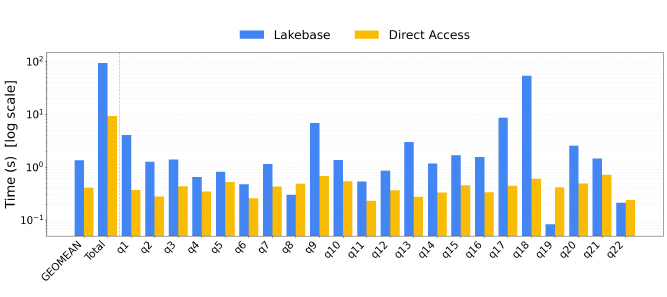
图 11：Lakebase 与 Lakehouse//RT（在 Lakebase 存储上启用 Direct Access）的 TPC-H 对比。
图 11 报告了 Direct Access 在 TPC-H 基准上的性能。总体而言，相对于 PostgreSQL，Direct Access 把总执行时间降低了 10 倍，把几何平均查询延迟改善了 3 倍。这些提升来自若干因素。第一，SIMD 加速的解析器与向量化执行引擎消除了 PostgreSQL 火山模型逐元组处理的大量开销。第二，列式执行提升了分析算子的效率，尤其是连接与聚合。最后，Direct Access 采用了一个分析型查询优化器，它常能生成更高效的执行计划。
在查询层面，我们观察到聚合密集与连接密集的负载有显著加速。Q1 取得 11 倍加速，主要归因于更高效的并行聚合。PostgreSQL 会带来额外开销，因为它的并行执行是用多进程实现的，而 Direct Access 使用线程。总体而言，连接与聚合数量更多的查询从向量化列式执行中获益更多。例如，Q18 在 Direct Access 下快了近 90 倍。
Q17 说明了查询优化的重要性。Direct Access 通过把子查询转换成基于连接的方案取得 19 倍加速。相比之下，PostgreSQL 生成了一个次优计划，反复计算该子计划，导致执行成本显著更高。
并非所有查询都能从 Direct Access 中获益。Q8 与 Q19 更慢，因为当前实现只支持顺序扫描。这两个查询都从索引嵌套循环连接中获益明显，而该能力在 PostgreSQL 中可用，但在 Direct Access 中尚未实现。
在并发的 400 QPS OLTP 负载下，由于缓存失效，Direct Access 的扫描会慢 1.76 倍。不过，由于 Direct Access 运行在计算之外，它从不会影响主库的写延迟。
8 相关工作
存储与处理的分离： MySQL [38]、PostgreSQL [4] 与 Oracle [3] 等第一代数据库系统把计算与存储紧耦在单台机器内。第二代系统，包括 Aurora [46]、Socrates [8]、AlloyDB [1]、SolarDB [51]、Taurus [18] 与 Tell [32]，在内部把存储与计算分离 [23]，改善了弹性与可用性。PolarDB serverless [50] 通过事务迁移实现无缝扩容，并在主节点与从节点上提供低延迟的强一致读 [48]。Snowflake Unistore [5] 通过一个私有的行存把 OLTP 加入 Snowflake 的 warehouse。然而，它们的存储格式仍是私有的，数据只能通过主数据库引擎访问。Microsoft Fabric [2] 把数据以 Delta 表形式存放在 OneLake 中，但其 OLTP 引擎格式仍是私有的。
Lakebase 代表第三代架构：它把全部存储外置到云对象存储，采用开放的 PostgreSQL 页格式，从而实现多引擎访问并消除结构性的厂商锁定。WAL 重放被卸载到分布式 Pageserver，存储层级提供性能与可用性。Lakebase 还支持亚秒级计算启动与面向智能体负载的零拷贝分支。
LSM 树数据存储： LSM 树数据存储针对写密集负载做优化 [15, 20, 21, 25, 27, 34, 43]。Chen 等人 [35] 综述了其他设计。关键实现包括 LevelDB [24] 与 RocksDB [20]，它们在内存中缓冲写入并落盘为不可变的磁盘 SSTable。替代性的压缩策略 [17, 27, 40] 在读、写与空间放大之间做权衡。WiscKey [33] 把键与值分离以降低压缩成本。
Lakebase 的 Pageserver 使用同时以页键与 LSN 索引的二维 LSM 树结构。它在内存中缓冲 WAL 记录，把它们落盘为不可变的层文件，并把所有文件上传到对象存储以便恢复。后台压缩缩短 GetPage 请求的 WAL 重放链，垃圾回收则回收超出 PITR 窗口的数据。
MicroVM 与自动伸缩： 云上无服务器应用的流行催生了 Firecraker [6] 等新颖的 MicroVM 系统，其目标是改善无服务器容器化应用的隔离性、供给性能与密度。NeonVM 就是这样一种目标类似的 MicroVM 系统，并额外强调对资源自动伸缩的支持。
现代数据系统会根据负载变化按需伸缩资源 [16, 22, 28, 29, 44]。Amazon Aurora Serverless [11] 实现了一个按需、纵向弹性的计算层，把计算与分布式存储分离。Aurora 会根据负载变化动态调整容量，支持快速扩容/缩容与按用量付费的计费方式。此外，文献中还有对响应式与主动式技术的描述 [36, 39, 42]，有些使用统计模型 [16]，另一些使用机器学习模型 [36] 来预测资源使用。Lakebase 以 CPU 与内存的分数粒度伸缩计算且无需停机。autoscaling agent 监控计算 CPU 使用率与工作集大小：在流量高峰时扩容计算以维持性能，在计算空闲时缩容到零。
集群资源管理： 集群资源管理已被广泛研究 [12, 45, 47]。近期工作涉及超售 [10]、负载预测 [19] 与分层分配 [30]。Lakebase 在预热池中超额供给虚拟机，并使用机器学习模型基于历史模式预测集群需求，从而实现快速的计算启动。
9 结论
本文提出了 Lakebase——一种第三代事务数据库架构，它把计算与存储分离，并以开放的 PostgreSQL 页格式把所有数据持久化到云对象存储。通过以开放格式外置存储，Lakebase 实现了多引擎访问，并把 OLTP 直接安置在 Lakehouse 旁边，统一了事务与分析工作流。该架构利用云对象存储获得持久性，利用存储层级获得性能与可用性，利用共识复制的 Safekeeper 保证写入正确性。与传统数据库部署相比，自动伸缩、缩容到零、自动故障转移与内建分支降低了运维复杂度。这些特性对需要即时克隆、亚秒级启动与短生命周期计算的智能体负载尤其重要。综合来看，这些能力使 Lakebase 成为一个"对智能体友好"的事务数据库。生产部署显示，Lakebase 能在大规模下支撑深分支模式与快速实验。在撰写本文时，Lakebase 是 Databricks 历史上采用最快的产品，每天创建并管理超过一千万个数据库。Lakebase 展示了：当为今天的云基础设施——存储持久且廉价、计算弹性、数据开放是硬性要求——来设计事务数据库时，它会是什么样子。
致谢
我们感谢 Databricks 与 Neon 中众多设计、构建并运营 Lakebase 的工程师、管理者与产品团队，也感谢开源 Neon 数据库社区——本工作建立在其贡献之上。我们还感谢匿名审稿人与 shepherd 的细致反馈，它们显著改进了本文。
参考文献
- Google Inc. 2026. AlloyDB: 100% PostgreSQL-compatible Database that Runs Anywhere. Google Inc. https://cloud.google.com/products/alloydb
- Microsoft Inc. 2026. Microsoft Fabric. Microsoft Inc. https://www.microsoft.com/enus/microsoft-fabric
- Oracle. 2026. Oracle. Oracle.
- The PostgreSQL Global Development Group. 2026. PostgreSQL: The World's Most Advanced Open Source Relational Database. The PostgreSQL Global Development Group.
- Snowflake Inc. 2026. Snowflake Unistore. Snowflake Inc. https://www.snowflake.com/en/product/features/unistore/
- Alexandru Agache, Marc Brooker, Andreea Iordache, Marc Liguori, Rolf Neugebauer, Phil Piwonka, and Jörg Popa. 2020. Firecracker: Lightweight Virtualization for Serverless Applications. In 17th USENIX Symposium on Networked Systems Design and Implementation (NSDI). 419-434.
- Amazon Web Services. 2021. Launch Windows faster on EC2. https://aws.amazon.com/blogs/modernizing-with-aws/launch-windows-faster-on-ec2/. Accessed November 17, 2025.
- Panagiotis Antonopoulos, Alex Budovski, Cristian Diaconu, Alejandro Hernandez Saenz, Jack Hu, Hanuma Kodavalla, Donald Kossmann, Sandeep Lingam, Umar Farooq Minhas, Naveen Prakash, Vijendra Purohit, Hugh Qu, Chaitanya Sreenivas Ravella, Krystyna Reisteter, Sheetal Shrotri, Dixin Tang, and Vikram Wakade. 2019. Socrates: The New SQL Server in the Cloud. In Proceedings of the 2019 International Conference on Management of Data (Amsterdam, Netherlands) (SIGMOD '19). Association for Computing Machinery, New York, NY, USA, 1743-1756. https://doi.org/10.1145/3299869.3314047
- Michael Armbrust, Ali Ghodsi, Reynold Xin, and Matei Zaharia. 2021. Lakehouse: A New Generation of Open Platforms that Unify Data Warehousing and Advanced Analytics. In Proceedings of the 11th Annual Conference on Innovative Data Systems Research (CIDR 2021). Online. https://www.cidrdb.org/cidr2021/papers/cidr2021_paper17.pdf
- Pankaj Arora, Surajit Chaudhuri, Sudipto Das, Junfeng Dong, Cyril George, Ajay Kalhan, Arnd Christian König, Willis Lang, Changsong Li, Feng Li, Jiaqi Liu, Lukas M. Maas, Akshay Mata, Ishai Menache, Justin Moeller, Vivek Narasayya, Matthaios Olma, Morgan Oslake, Elnaz Rezai, Yi Shan, Manoj Syamala, Shize Xu, and Vasileios Zois. 2023. Flexible Resource Allocation for Relational Database-as-a-Service. Proc. VLDB Endow. 16, 13 (Sept. 2023), 4202-4215. https://doi.org/10.14778/3625054.3625058
- Bradley Barnhart, Marc Brooker, Daniil Chinenkov, Tony Hooper, Jihoun Im, Prakash Chandra Jha, Tim Kraska, Ashok Kurakula, Alexey Kuznetsov, Grant McAlister, Arjun Muthukrishnan, Aravinthan Narayanan, Douglas Terry, Bhuvan Urgaonkar, and Jiaming Yan. 2024. Resource Management in Aurora Serverless. Proc. VLDB Endow. 17, 12 (Aug. 2024), 4038-4050. https://doi.org/10.14778/3685800.3685825
- Brendan Burns, Brian Grant, David Oppenheimer, Eric Brewer, and John Wilkes. 2016. Borg, Omega, and Kubernetes. Commun. ACM 59, 5 (April 2016), 50-57. https://doi.org/10.1145/2890784
- Donald D Chamberlin, Morton M Astrahan, Michael W Blasgen, James N Gray, W Frank King, Bruce G Lindsay, Raymond Lorie, James W Mehl, Thomas G Price, Franco Putzolu, et al. 1981. A history and evaluation of System R. Commun. ACM 24, 10 (1981), 632-646.
- Audrey Cheng, Shu Liu, Melissa Pan, Zhifei Li, Bowen Wang, Alex Krentsel, Tian Xia, Mert Cemri, Jongseok Park, Shuo Yang, Jeff Chen, Lakshya Agrawal, Aditya Desai, Jiarong Xing, Koushik Sen, Matei Zaharia, and Ion Stoica. 2025. Barbarians at the Gate: How AI is Upending Systems Research. arXiv:2510.06189 [cs.AI] https://arxiv.org/abs/2510.06189
- Yifan Dai, Yien Xu, Aishwarya Ganesan, Ramnatthan Alagappan, Brian Kroth, Andrea Arpaci-Dusseau, and Remzi Arpaci-Dusseau. 2020. From WiscKey to Bourbon: A Learned Index for Log-Structured Merge Trees. In 14th USENIX Symposium on Operating Systems Design and Implementation (OSDI 20). USENIX Association, 155-171. https://www.usenix.org/conference/osdi20/presentation/dai
- Sudipto Das, Feng Li, Vivek R. Narasayya, and Arnd Christian König. 2016. Automated Demand-driven Resource Scaling in Relational Database-as-a-Service. In Proceedings of the 2016 International Conference on Management of Data (San Francisco, California, USA) (SIGMOD '16). Association for Computing Machinery, New York, NY, USA, 1923-1934. https://doi.org/10.1145/2882903.2903733
- Niv Dayan and Stratos Idreos. 2018. Dostoevsky: Better Space-Time Trade-Offs for LSM-Tree Based Key-Value Stores via Adaptive Removal of Superfluous Merging. In Proceedings of the 2018 International Conference on Management of Data (Houston, TX, USA) (SIGMOD '18). Association for Computing Machinery, New York, NY, USA, 505-520. https://doi.org/10.1145/3183713.3196927
- Alex Depoutovitch, Chong Chen, Jin Chen, Paul Larson, Shu Lin, Jack Ng, Wenlin Cui, Qiang Liu, Wei Huang, Yong Xiao, and Yongjun He. 2020. Taurus Database: How to Be Fast, Available, and Frugal in the Cloud. In Proceedings of the 2020 ACM SIGMOD International Conference on Management of Data (Portland, OR, USA) (SIGMOD '20). Association for Computing Machinery, New York, NY, USA, 1463-1478. https://doi.org/10.1145/3318464.3386129
- Yanlei Diao, Dominik Horn, Andreas Kipf, Oleksandr Shchur, Ines Benito, Wenjian Dong, Davide Pagano, Pascal Pfeil, Vikram Nathan, Balakrishnan Narayanaswamy, and Tim Kraska. 2024. Forecasting Algorithms for Intelligent Resource Scaling: An Experimental Analysis. In Proceedings of the 2024 ACM Symposium on Cloud Computing (Redmond, WA, USA) (SoCC '24). Association for Computing Machinery, New York, NY, USA, 126-143. https://doi.org/10.1145/3698038.3698564
- Siying Dong, Mark Callaghan, Leonidas Galanis, Dhruba Borthakur, Tony Savor, and Michael Strum. 2017. Optimizing Space Amplification in RocksDB. In CIDR 2017, 8th Biennial Conference on Innovative Data Systems Research, Chaminade, CA, USA, January 8-11, 2017, Online Proceedings (Chaminade, California, USA). www.cidrdb.org, Chaminade, California, USA. http://cidrdb.org/cidr2017/papers/p82-dong-cidr17.pdf
- Robert Escriva. 2020. HyperLevelDB. HyperDex. https://github.com/rescrv/HyperLevelDB
- Guilherme Galante, Luis Carlos Erpen De Bona, Antonio Roberto Mury, Bruno Schulze, and Rodrigo da Rosa Righi. 2016. An Analysis of Public Clouds Elasticity in the Execution of Scientific Applications: a Survey. Journal of Grid Computing 14, 2 (2016), 193-216. https://doi.org/10.1007/s10723-016-9361-3
- Shahram Ghandeharizadeh, Philip A. Bernstein, Dhruba Borthakur, Haoyu Huang, Jai Menon, and Sumit Puri. 2022. Disaggregated Database Management Systems. In Performance Evaluation and Benchmarking: 14th TPC Technology Conference, TPCTC 2022, Sydney, NSW, Australia, September 5, 2022, Revised Selected Papers (Sydney, NSW, Australia). Springer-Verlag, Berlin, Heidelberg, 33-48. https://doi.org/10.1007/978-3-031-29576-8_3
- Sanjay Ghemawat and Jeff Dean. 2020. LevelDB. Google. https://github.com/google/leveldb
- Guy Golan-Gueta, Edward Bortnikov, Eshcar Hillel, and Idit Keidar. 2015. Scaling Concurrent Log-Structured Data Stores. In Proceedings of the Tenth European Conference on Computer Systems (Bordeaux, France) (EuroSys '15). Association for Computing Machinery, New York, NY, USA, Article 32, 14 pages. https://doi.org/10.1145/2741948.2741973
- GD Held, MR Stonebraker, and Eugene Wong. 1975. INGRES: a relational data base system. In Proceedings of the May 19-22, 1975, national computer conference and exposition. 409-416.
- Haoyu Huang and Shahram Ghandeharizadeh. 2021. Nova-LSM: A Distributed, Component-based LSM-tree Key-value Store. In Proceedings of the 2021 International Conference on Management of Data (Virtual event, China) (SIGMOD '21). Association for Computing Machinery, New York, NY, USA. https://doi.org/10.1145/3448016.3457297
- Abdul R. Hummaida, Norman W. Paton, and Rizos Sakellariou. 2016. Adaptation in cloud resource configuration: a survey. Journal of Cloud Computing: Advances, Systems and Applications 5, 1 (2016), 7. https://doi.org/10.1186/s13677-016-0057-9
- Rong Kang, Yanbin Chen, Ye Liu, Fuxin Jiang, Qingshuo Li, Miao Ma, Jian Liu, Guangliang Zhao, Tieying Zhang, Jianjun Chen, and Lei Zhang. 2025. ABase: the Multi-Tenant NoSQL Serverless Database for Diverse and Dynamic Workloads in Large-scale Cloud Environments. In Companion of the 2025 International Conference on Management of Data (Berlin, Germany) (SIGMOD/PODS '25). Association for Computing Machinery, New York, NY, USA, 471-484. https://doi.org/10.1145/3722212.3724426
- Ji You Li, Jiachi Zhang, Wenchao Zhou, Yuhang Liu, Shuai Zhang, Zhuoming Xue, Ding Xu, Hua Fan, Fangyuan Zhou, and Feifei Li. 2023. Eigen: End-to-End Resource Optimization for Large-Scale Databases on the Cloud. Proc. VLDB Endow. 16, 12 (Aug. 2023), 3795-3807. https://doi.org/10.14778/3611540.3611565
- Nong Li, Shoumik Palkar, Shant Hovsepian, Mostafa Mokhtar, and Reynold Xin. 2026. Introducing Lakehouse//RT: Real-Time Performance on the Unified Lakehouse.
- Simon Loesing, Markus Pilman, Thomas Etter, and Donald Kossmann. 2015. On the Design and Scalability of Distributed Shared-Data Databases. In Proceedings of the 2015 ACM SIGMOD International Conference on Management of Data (Melbourne, Victoria, Australia) (SIGMOD '15). Association for Computing Machinery, New York, NY, USA, 663-676. https://doi.org/10.1145/2723372.2751519
- Lanyue Lu, Thanumalayan Sankaranarayana Pillai, Andrea C. Arpaci-Dusseau, and Remzi H. Arpaci-Dusseau. 2016. WiscKey: Separating Keys from Values in SSD-conscious Storage. In 14th USENIX Conference on File and Storage Technologies (FAST 16). USENIX Association, Santa Clara, CA, 133-148. https://www.usenix.org/conference/fast16/technical-sessions/presentation/lu
- Chen Luo and Michael J. Carey. 2020. Breaking down Memory Walls: Adaptive Memory Management in LSM-Based Storage Systems. Proc. VLDB Endow. 14, 3 (Nov. 2020), 241-254.
- Chen Luo and Michael J. Carey. 2020. LSM-based Storage Techniques: A Survey. The VLDB Journal 29, 1 (2020), 393-418. https://doi.org/10.1007/s00778-019-00555-y
- Chenghao Lyu, Qi Fan, Fei Song, Arnab Sinha, Yanlei Diao, Wei Chen, Li Ma, Yihui Feng, Yaliang Li, Kai Zeng, and Jingren Zhou. 2022. Fine-grained modeling and optimization for intelligent resource management in big data processing. Proc. VLDB Endow. 15, 11 (July 2022), 3098-3111. https://doi.org/10.14778/3551793.3551855
- Diego Ongaro and John Ousterhout. 2014. In search of an understandable consensus algorithm. In Proceedings of the 2014 USENIX Conference on USENIX Annual Technical Conference (Philadelphia, PA) (USENIX ATC'14). USENIX Association, USA, 305-320.
- Oracle. 2026. MySQL.
- Olga Poppe, Qun Guo, Willis Lang, Pankaj Arora, Morgan Oslake, Shize Xu, and Ajay Kalhan. 2022. Moneyball: proactive auto-scaling in Microsoft Azure SQL database serverless. Proc. VLDB Endow. 15, 6 (Feb. 2022), 1279-1287. https://doi.org/10.14778/3514061.3514073
- Pandian Raju, Rohan Kadekodi, Vijay Chidambaram, and Ittai Abraham. 2017. PebblesDB: Building Key-Value Stores Using Fragmented Log-Structured Merge Trees. In Proceedings of the 26th Symposium on Operating Systems Principles (Shanghai, China) (SOSP '17). Association for Computing Machinery, New York, NY, USA, 497-514. https://doi.org/10.1145/3132747.3132765
- Michael Reeves, Dave Jing Tian, Antonio Bianchi, and Z. Berkay Celik. 2021. Towards Improving Container Security by Preventing Runtime Escapes. In 2021 IEEE Secure Development Conference (SecDev). IEEE, 38-46. https://doi.org/10.1109/SecDev51306.2021.00022
- Krzysztof Rzadca, Pawel Findeisen, Jacek Swiderski, Przemyslaw Zych, Przemyslaw Broniek, Jarek Kusmierek, Pawel Nowak, Beata Strack, Piotr Witusowski, Steven Hand, and John Wilkes. 2020. Autopilot: workload autoscaling at Google. In Proceedings of the Fifteenth European Conference on Computer Systems (Heraklion, Greece) (EuroSys '20). Association for Computing Machinery, New York, NY, USA, Article 16, 16 pages. https://doi.org/10.1145/3342195.3387524
- Russell Sears and Raghu Ramakrishnan. 2012. BLSM: A General Purpose Log Structured Merge Tree. In Proceedings of the 2012 ACM SIGMOD International Conference on Management of Data (Scottsdale, Arizona, USA) (SIGMOD '12). Association for Computing Machinery, New York, NY, USA, 217-228. https://doi.org/10.1145/2213836.2213862
- Ahmed A. Soror, Umar Farooq Minhas, Ashraf Aboulnaga, Kenneth Salem, Peter Kokosielis, and Sunil Kamath. 2008. Automatic virtual machine configuration for database workloads. In Proceedings of the 2008 ACM SIGMOD International Conference on Management of Data (Vancouver, Canada) (SIGMOD '08). Association for Computing Machinery, New York, NY, USA, 953-966. https://doi.org/10.1145/1376616.1376711
- Vinod Kumar Vavilapalli, Arun C. Murthy, Chris Douglas, Sharad Agarwal, Mahadev Konar, Robert Evans, Thomas Graves, Jason Lowe, Hitesh Shah, Siddharth Seth, Bikas Saha, Carlo Curino, Owen O'Malley, Sanjay Radia, Benjamin Reed, and Eric Baldeschwieler. 2013. Apache Hadoop YARN: yet another resource negotiator. In Proceedings of the 4th Annual Symposium on Cloud Computing (Santa Clara, California) (SOCC '13). Association for Computing Machinery, New York, NY, USA, Article 5, 16 pages. https://doi.org/10.1145/2523616.2523633
- Alexandre Verbitski, Anurag Gupta, Debanjan Saha, Murali Brahmadesam, Kamal Gupta, Raman Mittal, Sailesh Krishnamurthy, Sandor Maurice, Tengiz Kharatishvili, and Xiaofeng Bao. 2017. Amazon Aurora: Design Considerations for High Throughput Cloud-Native Relational Databases. In Proceedings of the 2017 ACM International Conference on Management of Data (Chicago, Illinois, USA) (SIGMOD '17). ACM, New York, NY, USA, 1041-1052. https://doi.org/10.1145/3035918.3056101
- Abhishek Verma, Luis Pedrosa, Madhukar Korupolu, David Oppenheimer, Eric Tune, and John Wilkes. 2015. Large-scale cluster management at Google with Borg. In Proceedings of the Tenth European Conference on Computer Systems (Bordeaux, France) (EuroSys '15). Association for Computing Machinery, New York, NY, USA, Article 18, 17 pages. https://doi.org/10.1145/2741948.2741964
- Xinjun Yang, Yingqiang Zhang, Hao Chen, Chuan Sun, Feifei Li, and Wenchao Zhou. 2023. PolarDB-SCC: A Cloud-Native Database Ensuring Low Latency for Strongly Consistent Reads. Proceedings of the VLDB Endowment 16, 12 (2023), 3754-3767. https://doi.org/10.14778/3611540.3611562
- Matei Zaharia, Reynold S. Xin, Patrick Wendell, Tathagata Das, Michael Armbrust, Ankur Dave, Xiangrui Meng, Josh Rosen, Shivaram Venkataraman, Michael J. Franklin, Ali Ghodsi, Joseph Gonzalez, Scott Shenker, and Ion Stoica. 2016. Apache Spark: a unified engine for big data processing. Commun. ACM 59, 11 (2016), 56-65. https://doi.org/10.1145/2934664
- Yingqiang Zhang, Xinjun Yang, Hao Chen, Feifei Li, Jiawei Xu, Jie Zhou, Xudong Wu, and Qiang Zhang. 2024. Towards a Shared-Storage-Based Serverless Database Achieving Seamless Scale-Up and Read Scale-Out. In 2024 IEEE 40th International Conference on Data Engineering (ICDE). 5119-5131. https://doi.org/10.1109/ICDE60146.2024.00384
- Tao Zhu, Zhuoyue Zhao, Feifei Li, Weining Qian, Aoying Zhou, Dong Xie, Ryan Stutsman, Haining Li, and Huiqi Hu. 2019. SolarDB: Toward a Shared-Everything Database on Distributed Log-Structured Storage. ACM Trans. Storage 15, 2, Article 11 (June 2019), 26 pages. https://doi.org/10.1145/3318158